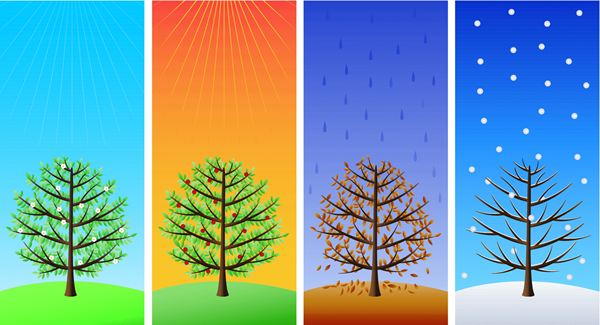

Project Intro
For our next project we will be using a new program called Frames. Frames is used to make pictures just like in Kid Pix, but Frames can make the pictures move. We will be making a 4 seasons slideshow. We will use the Stamps in Frames to make a moving picture of each of the 4 seasons. In addition to using the stamps we will also be writing, and we will learn a new computer skill - copy and paste.
Teaching Point:
Today we will learn how to copy and paste.
Copy and Paste
One thing that's great about using the computer, is that if we make something that we like, we can copy it as many times as we want without having to make it all over again. This is called copying and pasting. We can do it in Frames, in Kid pix, or in any other app that we use on the computer. To copy and paste in Frames:
- Click on the thing you want to copy.
- Press the copy button on top.
- Go to where you want to the new copy to be.
- Press the paste button on top.
Once you copy something, you can paste it as many times as you want. The Paste button will ALWAYS paste the last thing that you copied.
Today's Assignment
Find the picture in our Frames file that are for the winter. Copy each of them, and paste them into the Winter Slide.
Extension Activity
When you are done, copy the other seasons pictures into the correct slides, also using copy and paste.
Back to School Portal